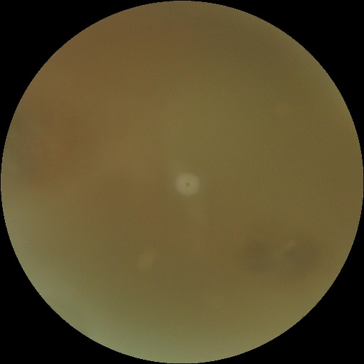
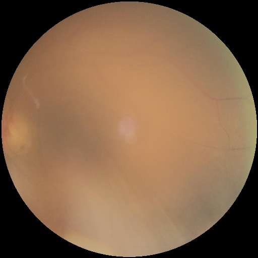
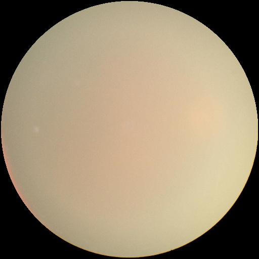
01
Cataract
Clouding of the eye's natural lens causing blurred vision. Identifiable by hazy, low-contrast fundus appearance and reduced vascular sharpness.
Model Precision
Retinal Image Analysis
Drop a retinal fundus image and our deep learning model — trained on 4,217 clinical images — will classify it across four ocular conditions with high precision.
Each class represents a distinct ocular pathology identifiable from retinal fundus photography.



Clouding of the eye's natural lens causing blurred vision. Identifiable by hazy, low-contrast fundus appearance and reduced vascular sharpness.
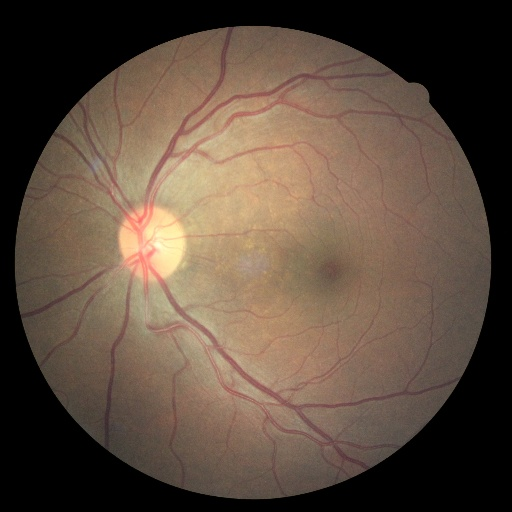
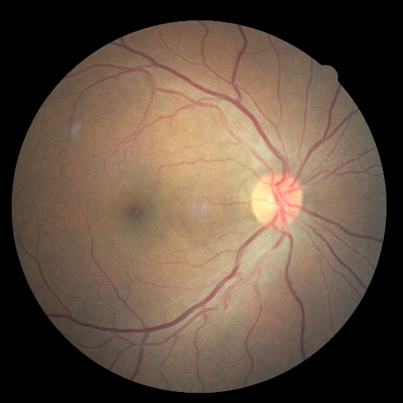
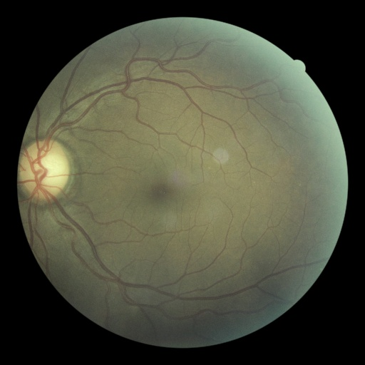
Vascular damage from diabetes causing microaneurysms, hemorrhages, and exudates. Highest precision class — distinctive vascular lesion patterns.
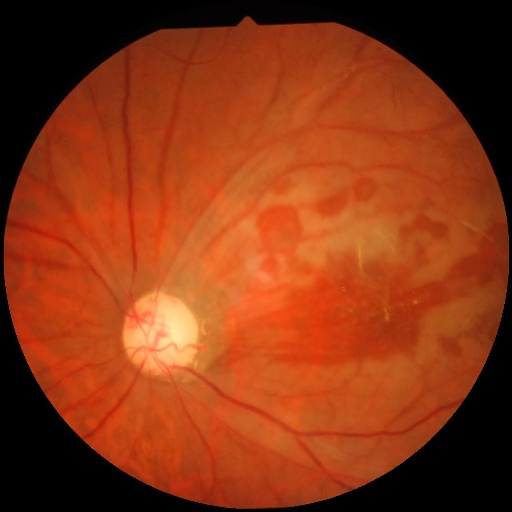
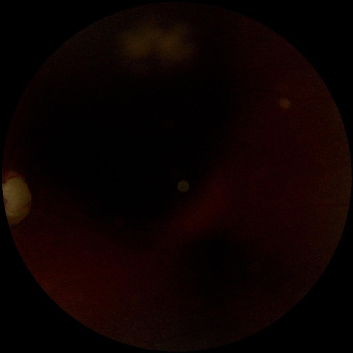
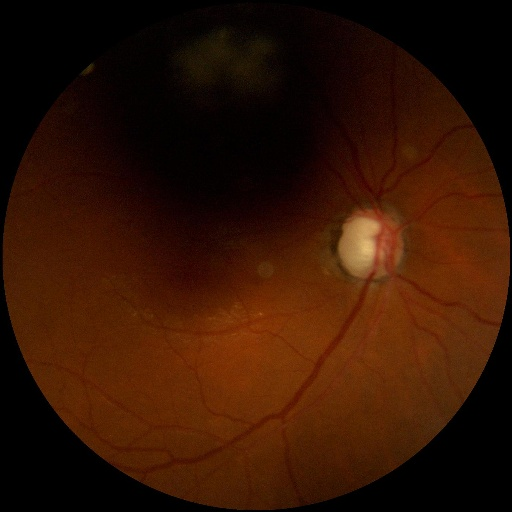
Optic nerve damage from elevated intraocular pressure. Characterized by increased cup-to-disc ratio and optic nerve pallor in fundus images.
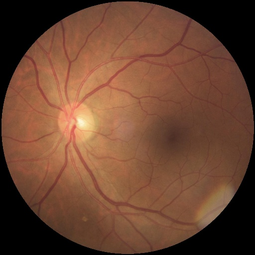
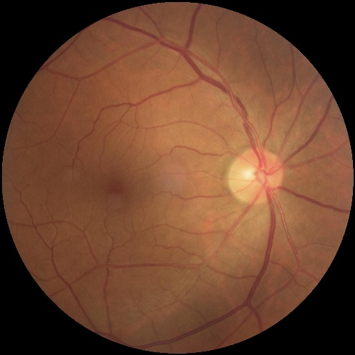
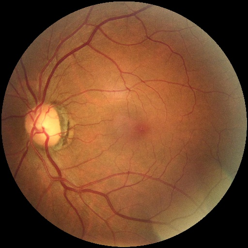
Healthy retina with clear optic disc, uniform vascular pattern, and no lesions. Baseline reference class for pathological comparison.
Upload or drag a retinal fundus image to receive an AI-powered diagnosis prediction.
Drop retinal image here
or
JPG · PNG · JPEG · BMP · WEBP
Analyzing retinal image…
For accurate results, use standard retinal fundus photographs. This tool is for educational purposes only.
Upload an image
to see results
Model not loaded yet.